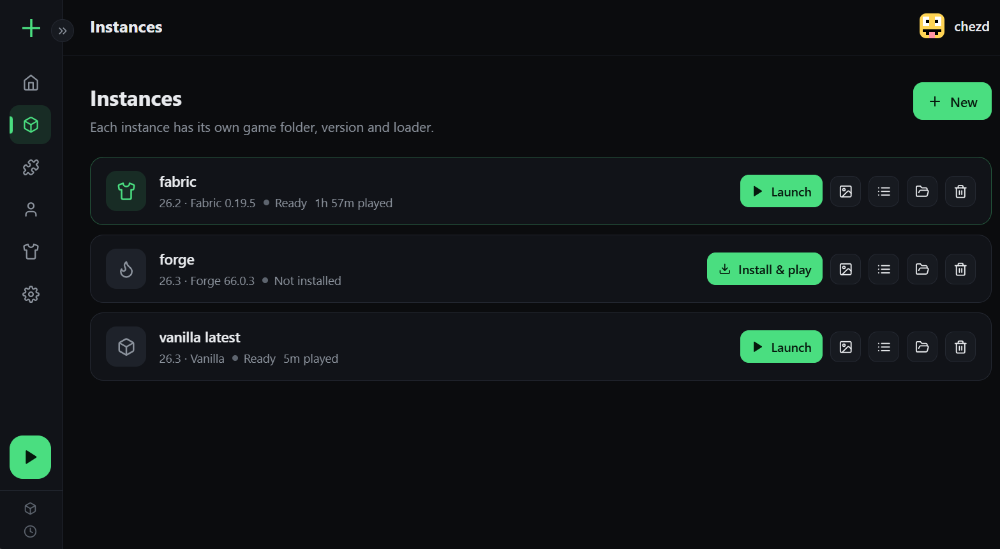
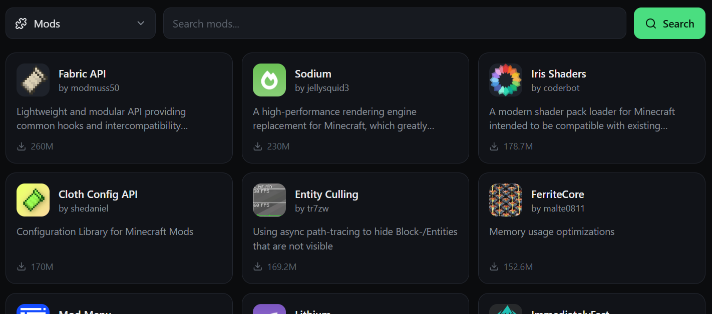
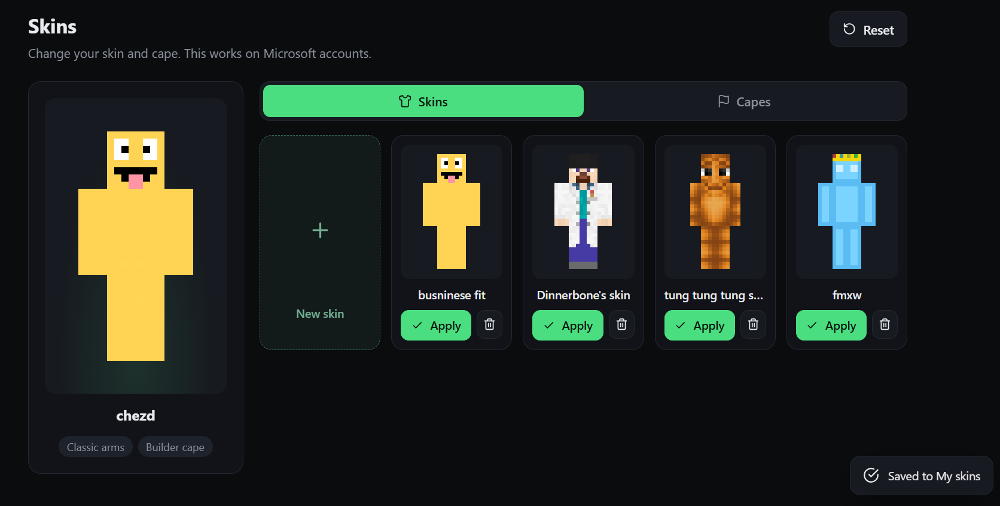

The best Minecraft launcher
Crit Launcher puts every version, your skins, and all your mods and packs in one window.
installs
Every version, all your instances
All Minecraft versions are supported. Create vanilla, Fabric or Forge instances and launch any of them with one click.

Mods, modpacks and resource packs
Install and manage mods, modpacks and resource packs without leaving the launcher.


Customize your skin
Change how your player looks right inside the launcher, then jump straight into the game.
Everything built in
Skin customization
Edit your skin without leaving the launcher.
All versions supported
Play any Minecraft version you want.
Modpack management
Add and organize modpacks in one place.
Mod and resource pack management
Install, update and remove them per instance.